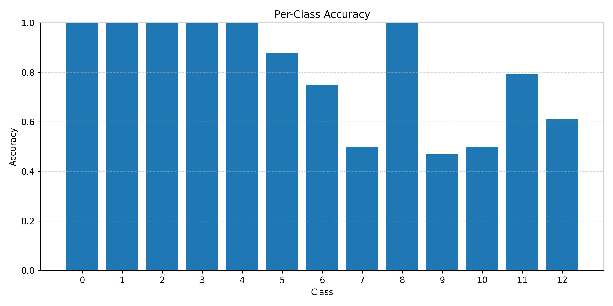
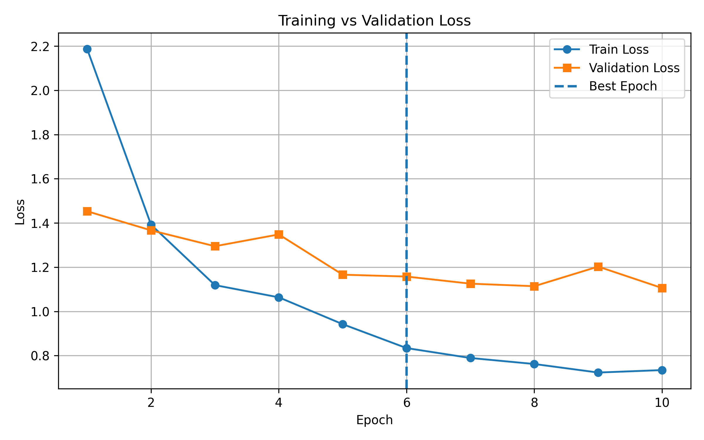
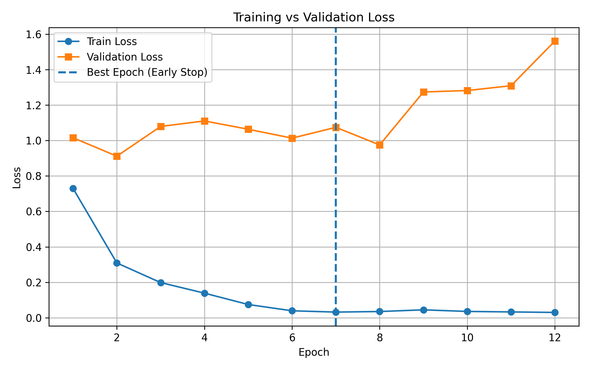

About This Project
AI-powered Fungus Classification
The Classifier is a machine learning-powered tool designed to identify and classify various types of fungi from uploaded images. It uses a custom-trained model on fungal species, focusing on characteristics such as cap shape, color, size, and other key traits.
At a Glance
- Number of classes: 13 distinct fungal categories with varying visual characteristics.
- Model type: Convolutional Neural Network (CNN) with a custom multi-head architecture, sharing a common feature extractor across prediction tasks.
- Best performance: Macro F1-score of 0.847, reflecting performance across all classes. Accuracy of 0.775 , reflecting the overall performance.
Technology Stack
The project is implemented in Python using PyTorch for deep learning development. It is built on a ResNet-18 CNN backbone adapted for multi-attribute image classification by replacing the final fully connected layer with multiple parallel linear heads, each predicting a specific visual attribute. Training uses transfer learning, with attribute classifiers trained separately before fine-tuning the shared backbone to improve overall performance and generalisation.
Model Performance
To better understand how the classifier performs across different fungal categories, we evaluate accuracy on a per-class basis. This helps reveal whether the model performs consistently or struggles with specific classes.

As shown above, several classes achieve near-perfect accuracy, indicating that their visual features are highly distinctive and well captured by the model. Other classes show lower accuracy, typically due to visual similarity between species, limited training samples, or higher intra-class variation.
Model Training Process
The model is trained in two distinct stages to balance representation learning and task-specific performance. Each stage follows a different optimisation objective and exhibits different learning dynamics, as shown below.
Stage 1 — Training the Attribute Classifiers
In the first stage, the attribute classifier heads are trained using transfer learning with a frozen or partially frozen backbone. This phase focuses on learning decision boundaries for specific visual attributes (such as cap shape, color, and other fungal characteristics) based on features extracted from the pretrained model.

The classifier training shows stable convergence and a relatively small gap between training and validation loss, suggesting that the pretrained representations provide a good foundation for learning fungal attributes.
Stage 2 — Fine-Tuning the Base Model
In the second stage, the shared convolutional backbone is fine-tuned after the initial attribute-head training. The goal is to adapt high-level visual representations to the fungal domain while preserving general features learned from pretraining, improving overall performance and generalisation across all attribute prediction tasks.

Early stopping is applied to prevent overfitting once the validation loss stops improving. This ensures that the shared feature extractor generalises well and provides improved representations for the final attribute classification tasks.